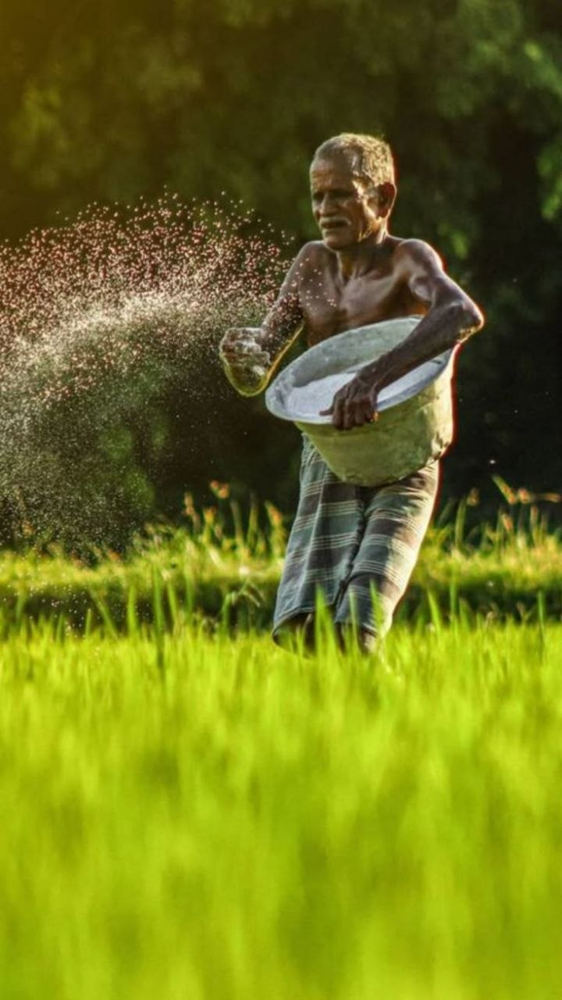

Rooted in Kerala. Growing with our farmers.
A stronger future
starts with the soil.
A Kerala cooperative connecting agriculture, horticulture and greener communities since 2006.
SAHSGrowing together, naturally
Cooperative action since 2006
Good things grow
when we grow together.
SAHS works with farmers and communities across Kerala to support agricultural development, local livelihoods and sustainable green spaces.
About SAHS & its leadership ↗
Greener places, made togetherFrom farms to public spaces
Practical work.
Lasting value.
From horticultural development to parks and public landscapes, SAHS brings skills, members and institutions together to make greener places that serve communities.
Explore our workLet us grow together
Start a conversation.
Contact SAHS to learn more about our society and work with communities across Kerala.